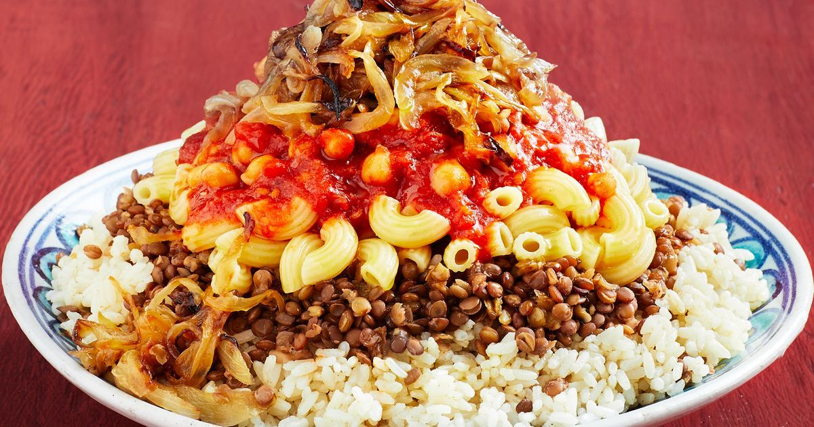
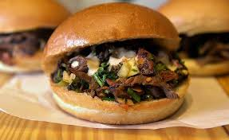

popular food in Egypt
Koshari
Carb overload coming right at you! Come lunch time in Cairo you’ll see a stack of locals lined up at every kushari shop around, waiting for a hearty portion of one of Egypt’s favourite street foods. This filling meal is made up of rice, macaroni and lentils, topped with tomato sauce, garlic vinegar and garnished with chickpeas and fried onions. It’s a perfect meal that is substantial, nutrient-packed and cheap. Exactly what the Egyptians were after!
Shawrma
It consists of thinly sliced, slow-roasted meat, typically lamb, beef, or chicken, wrapped in pita bread and topped with various condiments and fresh vegetables. The meat is often cooked on a vertical spit, resulting in a succulent and flavourful experience.
